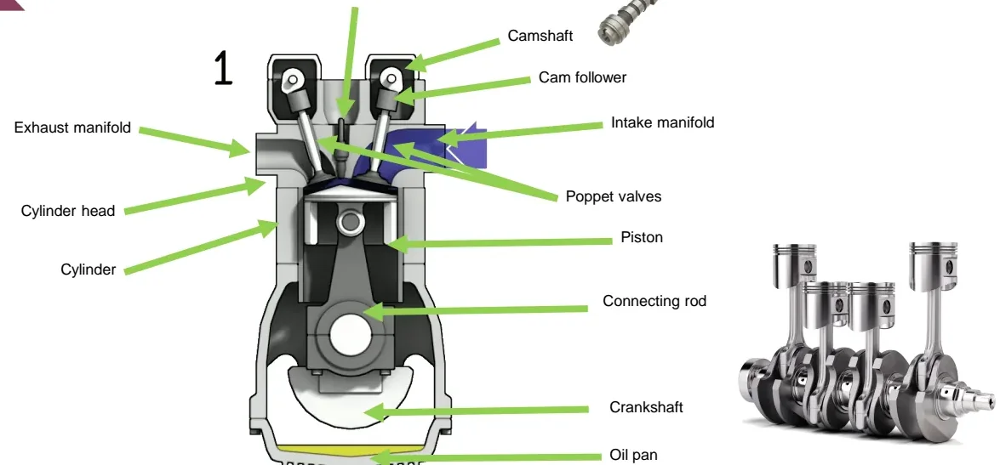
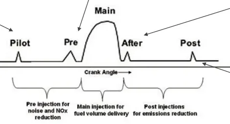
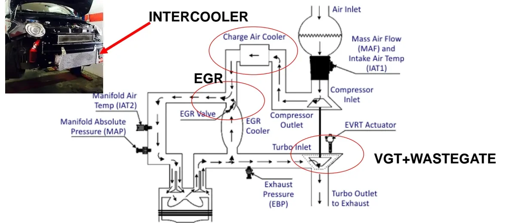

Internal Combustion Engines (ICE)¶
Welcome to your first deep dive into the hardware you will spend much of the bootcamp talking to. Even in an electrification-focused program, most vehicles you will calibrate, test and diagnose still burn fuel — and almost everything you will do as an E/E engineer (reading sensors, driving actuators, flashing software, chasing faults) happens around the engine. These two lessons build the foundation you need: how a 4-stroke engine works, how gasoline (spark ignition) and Diesel engines differ, how the engine control module meters air and fuel, and how modern engines use turbocharging, exhaust gas recirculation, variable valve actuation and exhaust aftertreatment to meet Euro 6 emission limits. By the end, you will be able to look at any engine control schematic and recognize every sensor, actuator and control loop on it.
Don't worry if some terms are new — every acronym is explained the first time it appears, and you will meet all of them again in the hands-on modules.
Anatomy of a 4-stroke engine¶
A piston slides inside a cylinder and is linked by a connecting rod to the crankshaft, which converts the piston's up-and-down motion into the rotation that ultimately drives the wheels. The cylinder head closes the top of the cylinder and hosts the poppet valves (intake and exhaust) and, in gasoline engines, the spark plug. The valves are driven by the camshaft (through cam followers or rockers), timed to the crankshaft. The intake manifold feeds fresh air (or air-fuel mixture) to the cylinders; the exhaust manifold collects the burned gases. The oil pan (sump) at the bottom holds the lubricating oil.

The piston moves between two limit positions you will hear about constantly:
- TDC — top dead center, minimum chamber volume
- BDC — bottom dead center, maximum chamber volume
The four strokes¶
One full working cycle takes two crankshaft revolutions (720°):
flowchart LR
I["1. Intake<br/>piston TDC → BDC,<br/>intake valve open"] --> C["2. Compression<br/>piston BDC → TDC,<br/>valves closed"]
C --> P["3. Expansion<br/>piston TDC → BDC,<br/>the power stroke"]
P --> X["4. Exhaust<br/>piston BDC → TDC,<br/>exhaust valve open"]
X -.->|"next cycle"| I- Intake — piston moves TDC → BDC, intake valve open: the cylinder fills with fresh charge.
- Compression — both valves closed, piston moves BDC → TDC: pressure and temperature rise sharply.
- Expansion (power stroke) — combustion pushes the piston TDC → BDC; this is the only stroke that produces work.
- Exhaust — exhaust valve open, piston moves BDC → TDC: burned gases are pushed out.
Key engine parameters¶
These are the numbers that define any engine — you will see them in specs, data sheets and calibration tools:
| Parameter | Definition | Notes |
|---|---|---|
| Bore B | Cylinder diameter | |
| Stroke s | TDC–BDC distance | |
| Displacement | s · π·B²/4 · N_cyl |
Total swept volume of all cylinders (the "2.0 L" in an engine name) |
| Compression ratio (CR) | volume at BDC ÷ volume at TDC | Gasoline ≈ 10–12, Diesel ≈ 15–20 |
| Stroke ratio | B ÷ s | "Oversquare" (B > s) engines rev higher |
| Air-fuel ratio (AFR) | m_air / m_fuel (mass or mass-flow ratio) |
Stoichiometric ≈ 14.7 for gasoline |
| BSFC | Brake specific fuel consumption, kg/kWh | Fuel used per unit of energy delivered; the standard efficiency chart for engine maps |
Spark ignition (SI) engines¶
In a gasoline — spark ignition (SI) — engine the air-fuel mixture is premixed (the fuel vaporizes into the intake air before combustion) and combustion is triggered by the spark plug. Crucially, the mixture is kept stoichiometric and constant — so power is regulated by modulating the airflow, not the mixture. Roughly:
P = η(T_e, rpm) · ṁ_fuel · H_i = η(T_e, rpm) · ṁ_air · H_i / AFR
with AFR ≈ 14.7 essentially constant, power scales directly with the air
mass flow the engine breathes. This one idea — control the air, keep the
mixture fixed — explains most of the gasoline engine's control hardware.
Why stoichiometric matters¶
| Mixture | AFR | Behavior |
|---|---|---|
| Rich | < 14.7 | Engine runs apparently normally if not excessively rich, but partial fuel oxidation produces unburned hydrocarbons (HC), carbon monoxide (CO) and soot; fuel is wasted |
| Stoichiometric | ≈ 14.7 | Ideal operation: complete oxidation ideally yields only CO₂ and H₂O |
| Lean | > 14.7 | Risk of misfire; slower flame front can cause overheating, knock and pre-ignition; higher mechanical and thermal stress. Carefully controlled lean operation can improve efficiency |
The three-way catalyst is the real reason
Stoichiometric operation is not just about clean combustion — the exhaust three-way catalyst only converts CO, HC and nitrogen oxides (NOx) efficiently at AFR ≈ 14.7. This is why the engine control module (ECM) works so hard to hold the mixture there (see the lambda feedback loop below).
Spark advance and compression ratio¶
Combustion does not start instantly when the plug fires — the flame needs time to propagate — so the spark is fired before top dead center (BTDC), typically 15°–25° BTDC.
- More advance → higher peak pressure and temperature → more power and efficiency, but higher mechanical/thermal stress and risk of knock.
- Higher compression ratio → higher efficiency, same knock/pre-ignition risk.
- Knock resistance is a fuel property: the octane number (typically 95–100 for gasoline, >120 for methane) defines how much advance/CR the engine can tolerate. If knock appears, the ECM must retard the spark — losing efficiency.
- Turbocharged SI engines therefore use lower compression ratios than naturally aspirated ones.
Four abnormal combustion events to recognize (you will meet these names again in the diagnosis modules):
- Misfire — mixture too diluted (too lean); combustion cannot start. Unburned fuel goes straight to the exhaust.
- Choke — mixture too rich; same result, unburned fuel out of the tailpipe.
- Knock — after the spark has started combustion, a hot spot (e.g. the exhaust valve) ignites the end-gas; the colliding flame fronts produce the characteristic metallic pressure oscillation.
- Pre-ignition — a hot spot ignites the mixture before the spark, usually from overheating or an excessive compression ratio. Far more destructive than knock.
Torque control: the throttle¶
The accelerator pedal commands the throttle body, which chokes the intake flow. At constant volumetric flow (set by displacement and rpm), choking reduces the density of the air downstream of the throttle, hence the air mass per cycle:
ṁ_air = ρ_intake · V̇ ≈ ρ_intake · (rpm/2) · displacement / 60
| Throttle | Intake density | Operating point |
|---|---|---|
| Closed (idle) | ρ_intake ≪ ρ_atm | Minimum air mass, minimum torque |
| Medium | ρ_intake < ρ_atm | Part load — where road cars spend most of their life |
| Wide open | ρ_intake ≈ ρ_atm | Maximum volumetric filling |
Pumping losses
Throttling is effectively a controlled waste: the piston works against a vacuum during intake at part load. These pumping losses are the main reason SI engines are less efficient than Diesels at partial load, and the motivation behind throttle-less load control (variable valve lift) and downsized turbocharged engines.
Fuel metering: measuring air, dosing fuel¶
Because AFR must stay at 14.7, the injected fuel mass must track the air mass exactly. In port injection, low-pressure injectors (3–5 bar) sit in the intake manifold downstream of the throttle; since gasoline is volatile (and liquefied petroleum gas (LPG)/methane are already gaseous), the fuel dissolves into the intake flow.
The problem: the exact instantaneous air mass flow cannot be predicted — transients, fluid dynamics, thermal effects and fuel vaporization all disturb it. The solution is a two-layer control loop, and it is the first closed-loop system you will learn to read:
flowchart LR
P["Accelerator pedal"] --> T["Throttle body"]
T --> M["MAF sensor"]
M -->|"measured intake air mass flow"| E["ECM"]
E -->|"injector opening time"| I["Fuel injectors"]
I --> C["Combustion chamber"]
C --> L["Lambda probe<br/>(exhaust manifold)"]
L -->|"residual O₂ feedback"| E- Feed-forward: a mass air flow (MAF) sensor measures the intake air flow and the ECM computes the base injection time. MAF sensors are expensive, can disturb the flow, and perform poorly above ~7500 rpm.
- Feedback: a lambda probe (λ sensor) in the exhaust manifold detects excess oxygen (lean mixture) or its absence (rich mixture), and the ECM trims the injected fuel dynamically to hold λ = 1 (λ = AFR ÷ AFR stoichiometric).
Diesel engines¶
Diesel (compression ignition) engines flip most SI assumptions. This table is worth remembering — it explains nearly every hardware difference you will see:
| Spark ignition | Diesel | |
|---|---|---|
| Mixture | Homogeneous, premixed | Highly non-homogeneous: AFR spans 0 (fuel droplets) to ∞ (pure air zones) |
| Ignition | Spark plug | Spontaneous, from high pressure/temperature at end of compression |
| Intake | Throttled | No throttle — free intake, airflow depends mainly on rpm |
| Torque control | Air mass (throttle) | Directly the injected fuel quantity; air mass ≈ constant |
| AFR | Held ≈ 14.7 | Always excess air (lean) |
| Compression ratio | ~10–12 | 15–20, end-of-compression pressures roughly 2× SI |
| Fuel volatility / injection | Volatile fuel, 3–5 bar port injection | Poorly volatile fuel, injected at up to 2000 bar to atomize into fine droplets |
| Combustion mode | Premixed flame front | Mainly diffusive (fuel burns as it mixes) |
Fuel quality is expressed by the cetane number (typically 51–60): the higher the cetane, the shorter the ignition delay between injection and combustion start, and the higher the usable engine speed. The ignition delay is extremely temperature-sensitive — a 200 K difference can change it by a factor of 20 — which is why glow plugs create a local hot spot for cold starts. Advancing the injection (the Diesel counterpart of spark advance) raises peak pressure and efficiency but also mechanical stress and combustion noise.
Diesel pollutants: soot and NOx¶
Diesels are more efficient, but that efficiency comes with a specific emissions bill:
- Soot is essentially unburned fuel — its presence means lost efficiency. It forms when oxygen is locally or globally scarce, mixing is poor (low turbulence), droplets are too large to vaporize completely, or the droplet surface carbonizes at extreme temperatures before evaporating. Smaller droplets (higher injection pressure) vaporize more completely and limit soot.
- NOx (nitrogen oxides, NO and NO₂) forms because air is ~79% N₂ and ~21% O₂: at Diesel combustion temperatures, and with long residence times and abundant excess oxygen, molecular nitrogen splits and oxidizes. NOx is therefore the price of the Diesel's efficiency — high temperature, high pressure, no throttling.
Injection hardware evolution¶
- Indirect injection (IDI) — fuel is injected into a small pre-chamber where combustion starts easily and rapidly (short ignition delay). The pre-chamber's connecting hole generates turbulence that improves mixing and slows the heat-release/pressure peak, cutting noise and mechanical stress and relaxing injection-timing precision. The cost: larger hot surfaces and the pressure drop through the hole reduce efficiency.
- Direct injection (DI) — fuel goes straight into the cylinder. Better efficiency, but requires careful fluid-dynamic design (turbulence) and high fuel pressure to force the (originally mechanical) injector open.
- Electronic direct injection — electronically controlled unit injectors or pump-injectors make timing and quantity programmable.
- Common rail — a shared high-pressure rail acts as a hydraulic accumulator, decoupling the available fuel pressure from the injection pump. Fuel is always available at ECM-controlled rail pressure, so electronic injectors can fire multiple injections within 1–2 ms. This is the technology behind the names you will see everywhere (MultiJet, TDI, HDi, CDI).
Multiple injection phases¶

A single combustion cycle can combine up to five injection events — this is where calibration engineers spend a lot of their time:
| Phase | Position | Purpose |
|---|---|---|
| Pilot | Early, small | Pre-heats the chamber, shortening the main injection's ignition delay — greatly reduces combustion noise and mechanical stress |
| Pre | Before main | Reduces oxygen availability when the main injection burns — less NOx, at the cost of more soot |
| Main | Around TDC | Delivers the actual fuel volume (torque); its time shape is freely programmable with electronic injectors |
| After | Just after main | Sustains combustion into the expansion stroke, promoting soot oxidation |
| Post | Late (optional) | Feeds the aftertreatment — raises exhaust enthalpy for DPF regeneration |
Turbocharging and the air path¶
Engine power can be raised in three ways: more displacement, higher maximum rpm, or higher in-cylinder peak pressure. Turbocharging takes the third route indirectly: a compressor raises the intake-manifold pressure, so more air (more oxygen) enters the cylinder and more fuel can be burned.
The trick is that the compressor sits on the same shaft as a turbine driven by the hot, still-pressurized exhaust gases — energy that would otherwise be wasted. Boost is therefore (almost) free.

Take a moment with this figure — nearly every component on it is a sensor or actuator you will one day measure or drive from a test bench.
Pros
- More torque and power from a smaller engine (downsizing).
- In Diesels, peak power and overall efficiency always improve (waste-energy recovery); in SI engines, gains materialize when the turbo's best-efficiency zone is matched to the engine's poor-efficiency zone on the BSFC map.
- At medium-high load the compressor pushes air in, reducing the intake pumping work.
Cons
- Higher complexity and cost; extra degrees of freedom to control.
- Compressed air heats up — an intercooler (charge air cooler) is needed, otherwise the cycle's low temperature rises and efficiency drops.
- Turbine/compressor inertia causes turbo lag — delayed boost after a sudden load request.
Boost control: wastegate and VGT¶
- Wastegate (WG) — a valve that bypasses part of the exhaust around the turbine. The ECM modulates it to limit turbine speed (turbines spin up to ~250,000 rpm) and boost pressure, using the exhaust back-pressure (EBP) and manifold absolute pressure (MAP) sensors.
- Variable geometry turbine (VGT) — adjustable vanes change the turbine's flow conditions. Opening the vanes mimics the wastegate (which then becomes unnecessary); closing them speeds the turbine up at low exhaust flow. VGT optimizes boost across the whole rpm/torque range, strongly mitigates turbo lag, and gives the ECM an extra actuator for emission-control strategies.
Exhaust gas recirculation (EGR)¶
The exhaust gas recirculation (EGR) valve (ECM-controlled) routes a fraction of the exhaust back into the intake. Recirculated exhaust is inert in the chamber: it lowers the combustion temperature and the oxygen availability, and since NOx formation is temperature-driven, NOx drops. The recirculated gas must first pass through a dedicated heat exchanger — the EGR cooler.
Soot in the EGR stream is a design trade-off: with careful calibration, small particles can be re-burned, or particles can grow — easier to trap in the particulate filter but worse for fouling of the EGR valve, cooler and intake manifold.
Breathing and mixture strategies¶
Gasoline direct injection (GDI)¶
Injecting gasoline directly into the cylinder enables stratified charge operation at low load:
- A stoichiometric-to-slightly-rich cloud forms near the spark plug (so it ignites reliably) while the rest of the chamber runs lean to very lean.
- The throttle can stay wide open in stratified mode — pumping losses drop and higher compression ratios become possible.
- At medium/high load the ECM switches to homogeneous mode (AFR ≈ 14.7 everywhere, like port injection); some engines keep a traditional port injector for exactly this.
- Costs: sophisticated injectors, critical in-chamber fluid-dynamic design, tricky transient control (stratified mode is abandoned during transients), soot formation from poor mixing time, and higher NOx from lean zones. The benefits are limited in conventional powertrains but greater in hybrids.
Variable valve lift and timing (VVL/VVT)¶
- Variable valve lift (VVL) can regulate intake airflow through the valves themselves, potentially eliminating the throttle body and its pumping losses.
- Variable valve timing (VVT) optimizes valve opening/closing instants for better cylinder filling (exploiting manifold dynamic effects), giving a favorable torque curve at both low and high rpm — impossible with fixed cam timing.
- Valve timing can also realize internal EGR (sucking exhaust gas back into the cylinder without an EGR loop) and reduce pumping losses by advancing intake-valve closing and exhaust-valve opening.
- Systems can be continuously variable (BMW Valvetronic) or discrete (Honda VTEC, two timings). Nearly every manufacturer has a proprietary scheme — BMW Valvetronic, Porsche VarioCam, Honda VTEC, FCA MultiAir.
FCA MultiAir in one paragraph¶
One camshaft serves both valve rows: exhaust valves are actuated conventionally, while the intake cam drives a small hydraulic pump (like a syringe) through a rocker. The pump feeds pressurized engine oil to hydraulic pistons above the intake valves via an electronically controlled solenoid valve. By opening or closing the solenoid, the ECM decouples intake-valve motion from the camshaft — full software control of intake lift and timing using the engine's own oil as the working fluid. It is a great example of how much "mechanical" behavior is now actually software.
Exhaust aftertreatment¶
Oxidation and three-way catalysts¶
- A first catalyst oxidizes incomplete combustion products (CO and HC); it works in stoichiometric-to-lean exhaust, so it fits both SI and Diesel. In Diesels it is called the Diesel oxidation catalyst (DOC) and operates above ~200 °C; SI catalysts are platinum/palladium-based and work above 600–700 °C.
- A second, rhodium-based catalyst reduces NOx — but only in rich-to-stoichiometric exhaust, so it cannot be used on Diesels (always lean).
- Best overall conversion requires AFR ≈ stoichiometric — one more reason for the lambda closed loop you saw above.
Catalyst diagnostics
Catalyst health is monitored with two lambda probes, one upstream and one downstream. As long as the two see different oxygen concentrations the catalyst is storing/releasing oxygen correctly; when the two signals become too similar, the ECM flags catalyst degradation. You will use exactly this signal pair when diagnosing aftertreatment faults.
Particulate filters: DPF and GPF¶
A Diesel particulate filter (DPF) is a ceramic or metal matrix that mechanically traps soot; a catalytic coating lowers the soot-oxidation temperature. During low-load driving (traffic, high EGR, cold exhaust) soot accumulates, and a differential pressure sensor across the filter tracks the build-up. Past a threshold, the ECM triggers regeneration:
- post injection of fuel to raise exhaust temperature above 450–500 °C, and
- a dedicated low-EGR strategy to increase exhaust oxygen.
The gasoline particulate filter (GPF) is the gasoline counterpart, needed mainly for GDI engines (the only SI engines with significant soot). SI exhaust is hotter, so no extra fuel is burned; regeneration runs during deceleration cut-offs and/or by increasing airflow (throttle or VVL) while retarding spark advance (within knock limits).
SCR: urea-based NOx reduction¶
Diesels cannot use a NOx-reduction catalyst, so NOx is chemically reduced in a selective catalytic reduction (SCR) reactor:
- An aqueous urea solution (AdBlue) is injected upstream of the reactor and decomposes into ammonia, the actual reactant. (Ammonia itself is flammable, toxic and volatile — urea is the safe carrier.)
- In the reactor's channels the exhaust-ammonia mix passes over a vanadium-based catalyst, where ammonia reduces NOx to N₂ and H₂O.
- NOx concentration in exhaust is only ~1%, so dwell time must be long enough for good conversion. Dosing more ammonia improves NOx reduction but risks ammonia slip out of the tailpipe.
- A second stage — the ammonia slip catalyst (ASC) — absorbs slipped ammonia and releases it when NOx production rises, acting as an ammonia buffer.
flowchart LR
E["Engine exhaust"] --> D["DOC<br/>oxidize CO + HC"]
D --> F["DPF / SCRoF<br/>trap soot (+ SCR coating)"]
F --> S["SCR / SCRuF<br/>urea dosing, NOx → N₂"]
S --> A["ASC<br/>ammonia slip catalyst"]
A --> T["Tailpipe"]Case study: 2.2 L MultiJet Euro 6d¶
The second lesson closes with a real Euro 6d diesel (2.2 L, 180–200 hp class, Jeep Cherokee / Ducato family) showing what all of the above means in hardware. Read this list as a preview of your future workplace: almost every item is a sensor you will log or an actuator you will command.
- Air path: MAF meter with integrated temperature/humidity/pressure sensors (connected over LIN), MAP + manifold temperature sensors, compressor-outlet and intercooler-outlet temperature sensors, an electrical VGT valve with position feedback, an H-bridge throttle actuator, and smart swirl control.
- Fuel path: high-pressure pump with metering unit, common rail with pressure sensor and DRV (pressure regulator valve), four CRI 2.20 injectors, plus LP fuel pump control, water-in-fuel sensor and fuel heater.
- EGR: both high-pressure (HP-EGR) and low-pressure (LP-EGR) valves (H-bridge driven, with position sensors), EGR temperature sensors and an EGR cooler bypass.
- Cold start: glow plug control unit (GCU3) with four glow plugs.
- Aftertreatment: the aftertreatment system (ATS) uses SCRoF + SCRuF with double urea dosing — a DOC, then an SCR-coated DPF with its own dosing module, then an underfloor SCR with a second dosing module, supervised by a dedicated SCR control unit (SCU), multiple NOx sensors (DOC inlet, SCRoF outlet, SCRuF outlet), a soot sensor, temperature sensors at every stage, and a urea tank assembly with level, quality and temperature sensing plus heated lines.
Moving from Euro 6d-Temp to full Euro 6d on this engine meant, among other things: a new electronic control unit (ECU) generation, a second urea injector with its own controller, improved underfloor SCR, a third NOx sensor, a second 80 W water pump, cooled LP-EGR, new injector nozzles, and durability upgrades (steel pistons, new cylinder head, oil pump and cooler).
Key takeaways
You now have the mental map every engine-related task in this bootcamp builds on: - A 4-stroke cycle = intake, compression, expansion, exhaust over two crankshaft revolutions; compression ratio, displacement and AFR are the numbers that define an engine. - Gasoline (SI) engines hold AFR ≈ 14.7 and control torque with the throttle; the ECM meters fuel via MAF feed-forward plus lambda-probe feedback — your first closed control loop. - Knock, pre-ignition and misfire bound spark advance and compression ratio; octane (SI) and cetane (Diesel) numbers grade fuel quality. - Diesels run unthrottled with excess air, control torque via injected fuel quantity, ignite by compression (CR 15–20, injection up to 2000 bar) and pay for their efficiency with soot and NOx. - Common-rail injection chains pilot/pre/main/after/post events within 1–2 ms to trade noise, NOx, soot and DPF regeneration. - Turbocharging recovers exhaust energy (wastegate/VGT control, up to ~250,000 rpm turbine speed), the intercooler protects efficiency, and EGR cools combustion to cut NOx. - Aftertreatment is a chain: oxidation catalyst/DOC, DPF/GPF with pressure-sensor-triggered regeneration, SCR with AdBlue dosing plus an ammonia slip catalyst — all monitored by lambda, NOx, temperature and differential-pressure sensors that you will meet again in the diagnosis and calibration modules.
Where this leads
The sensors and actuators listed here (MAF, MAP, lambda, EGR and VGT position, rail pressure) are exactly what you will measure and stimulate in the HIL and INCA lessons, and the communication between the ECM and smart auxiliaries rides on the CAN and LIN buses. Everything on this page comes back — now with a multimeter and a CAN trace in your hands.
Source material¶
This article was distilled from the academy lesson materials:
- MCI 1 — PDF, 2.1 MB
- MCI 2 — PDF, 1.9 MB
- MCI Animation — PDF, 14.0 KB